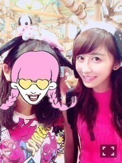
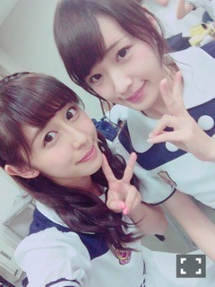
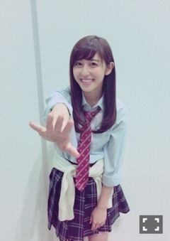

| 2015/09 14 Mon | 斎藤ちはる 手が腱鞘炎になるく らいたくさん書いた よ！じっくり読んで ね〜(´>∀<｀)ゝ |
ちはるーむへようこそ！！
久しぶりの更新で、待ってた方ごめんね( ;o; )
話したいことたくさんあるから、
ちょっとづつ振り返って行こうかな...！！
＊全国ツアー
この夏は、ライブ一色でした！！
7月のリハから始まり、仙台、名古屋、広島、福岡、大阪、そして神宮。
各地、たくさんの思い出やたくさんの笑顔があるなあ。
どこも楽しかった思い出ばっかり！！
それってすごいことだなって思う\( ˆoˆ )/
1番大きな会場、3万人が動員できる
神宮球場で2Daysライブすることができたことは
私たちにとってすごく大きなことでした！
去年の私たちは神宮でのライブに、たくさんの悔しさを残してしまった。
心から充実したライブだと言えないことが悔しかった。
そんな会場で、今年もう一度リベンジができる。しかも2日間。
絶対負けられない何かがそこにありました。
でも、各地でのライブを終えた私たちは去年のような負け試合にはしない！！という強い気持ちがありました。
14公演全力で突っ走ってきた私たちに、怖いものはない。言葉では言わずとも心にはみんな同じことを思っていたんじゃないかな。
結果、今年の神宮ライブでは
乃木坂にしかできないライブだ！
とたくさんの方に言ってもらえるようなものにすることができました！
それも皆さんがいつも応援してくれて、
ライブに来たいと思ってくれて、
たくさん支えてくれるからこそ
自信を持って挑むことができたんだと思います！！
皆さんと見た、サイリウムの波。忘れられません。
ダブルアンコール、本当たくさん泣いたなあ( ;o; )
来てくださった皆さん、応援してくださった皆さん、ありがとうございました！！！！
＊13th
アンダーです。
たくさん思うこともあるし、
たくさん感じてることもある。
でも諦めてるわけじゃないし
失望しているわけでもない。
自分にできる精一杯のことを続ければ
なにか変わるんじゃないか。
そう思ってます。いや、願ってます。
こんな私ですが、これからも支えてくれますか？
＊夏休み
夏休みは、家族4人で久しぶりに小旅行行ってきました！
場所は〜ユニバーサルスタジオジャパン！♡

ぱぱまま妹で行ったことあって、
私は愛未ずーまひろで行ったことあったけど
家族揃ってのユニバは初めて！！
はしゃいでたくさん写真撮っちゃった...♡
大好きなハリーポッターの世界も、やっぱり綺麗だし幻想的だし住みたいし...
スヌーピーが可愛すぎて一目惚れしてぬいぐるみ買っちゃってから一緒に寝てるし...
バックドロップの楽しさの凄まじさに髪の毛なんてどうでもよくなったし...
バイオハザードの暗証番号に妹が失敗してYou are died.だったとしてもみんなの顔みたら笑顔だったし...
ミニオンの可愛さにやられてポップコーンケース欲しかったけど行列に並ぶ勇気がでなかったけどやっぱり欲しかったし...
バックドラフトで本当に自分も燃えるんじゃないかって不安になって最後の最後で死期が見えたけどでてきたときの興奮ぶりはみんなを引かせるものだったし...
ああ...とりあえず何が言いたいかと言うと
本当に最高でした！！！！
本当にこれは！本当に！！！
すごい楽しかった〜...( ;o; )♡
ハロウィン期間も行きたい...( ;o; )♡
＊12th 全国握手会
久しぶりに、一実とペアでした！！！

本当にたっくさんの方に全握来ていただいて、
全然喋れなかったのが悔いに残ります...
わざわざ並んでいただいた皆さん
本当にありがとう！！！
じっくり喋りたいから、今度は個別に来て欲しいな...(﹡ˆ ˆ﹡)
それにしてもずーファンの皆さんも
ずーに似てすごく優しくて嬉しかったです！
ずーとペアでよかった...♡
あ...こんなこと言ってると愛未に嫉妬されちゃう...(｡･o･｡)ﾉ笑
危ない危ない(｡･o･｡)ﾉ笑
ちはるーむめいとさん達は、あんな長い列にわざわざ並んでくださって一言だけでも声をかけてくれる優しさに、ずっと一緒にいてほしいなって再確認しました...！！！
本当に感謝です。ありがとう。
セブンイレブンライブも終わってしまった( ;o; )かなしい( ;o; )
全国ツアーとかの大きいライブとはまた違った楽しさがあって好きだったのに( ;o; )
何度目の青空か？の青のサイリウムは
どこの会場でもやっぱり綺麗。
見惚れてしまうし感動する。
普通に涙がでてきそうになってしまう。
危ない。ここまで涙もろいと治さなきゃいけないなって思う...。
全握ライブも、フルで別れ際を披露できてすごく嬉しいチャンスだったのに...( ;o; )
2Bメロの追っかけの部分の自分の歌のパートが、さりげなく好きで、みんなにもっと聞いて欲しかった...( ;o; )
クリスマスライブも決定したし、
17、18、20、21はずっと武道館で会えるね♡
やったーやったー♡
＊12th 個別握手会
今回は、高校卒業して半年、ついにコスプレデビュー( ;o; )！！
コスプレをする日が来るなんて( ;o; )！！
時の流れは早いもんです。ほんと。ついていけません。

ねえ、一緒に帰ろ？？
ふ(｡･o･｡)ﾉはずかし(｡･o･｡)ﾉ
まだ、いける？(｡･o･｡)ﾉ
愛未とずーとお揃いで制服にしたんだ！！
そしたらまあやもたまたま制服で、楽しかった(﹡ˆ ˆ﹡)
全握でなかなか話せなかった分、
じっくり個別で話せて
久しぶりにこういう時間がすごく安心できた！
やっぱり皆さんに会うと元気もらえるし
頑張ろうっていう活力になる。
完売で、すごく嬉しくて、こういう嬉しい気分にしてくれる皆さんがもっと好きで。
ほんとに皆さんのことが大好きなんだな〜って改めて感じることができる素敵な時間を過ごせました！！
まだ会いに来たことない方も、
ぜひ会いに来てほしい...！！
いつでも待ってるからね(﹡ˆ ˆ﹡)
＊アンダーライブ決定！！
したのですが...
10月のアンダーライブ、当たらないって声が多くて(> <)
アンダーライブというものが人気になってきてすごく嬉しいけど
たくさんの方に見ていただけないっていう悲しさやもどかしさでいっぱい...
応募してくれた方みんなに来てほしいよー( ;o; )
倍率が高いってことはそれだけ期待値も高いってこと。
自分に甘えず。他人に甘えず。
いいもの魅せるぞ！！！
もし10月のアンダーライブ来れなかったら、武道館で待ってるから...！！
アンダーだけの武道館2日間、
絶対後悔はさせないから！！！
たくさんのお友達を呼んできてください！！！
ここまで読んでくれてありがとう( ;o; )
ここまでかっ！！ってくらい長い長い文章を...
なんか書きたいことがたくさんありすぎて
思わず長くなってしまった...( ;o; )
でもなんか文章を書くのが楽しくて
又吉さんのように小説を書いてみたいっていう気持ちが少しづつ大きくなっている。
今は無理でも、いつか。成功させたい。
小さいけど、大きな夢。ひとつ見つけた。
おやすみなさい！
斎藤ちはる